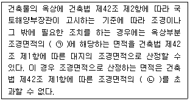
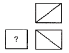
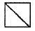
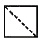
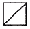
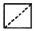
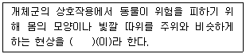
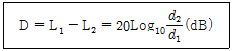
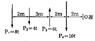

조경산업기사 (2010-05-09 기출문제)
1과목: 조경계획 및 설계
1. 용의 분수와 백개의 분수가 있는 테라스(Terrace of Hundred Fountains)로 유명한 별장은?
- 란테 별장(Villa Lante)
- 메디치 별장(Villa Medlcl)
- 에스터 별장(Villa d Este)
- 마다마 별장(Villa Madama)
(정답률: 63%)

2. 표면에 닿는 복사열이 흡수되지 않고 반사되는 %를 알베도(albedo)라 한다. 다음 중 지상피복조건에 따른 알베도의 값이 잘못된 것은?
- 마른모래(0.45~0.65)
- 산림(0.10~0.20)
- 바다(0.06~0.08)
- 초지(0.15~0.25)
(정답률: 63%)
3. 원격탐사(RS)에 대한 설명으로 거리가 먼 것은?
- 비접촉 센서를 이용하여 관심의 대상이 되는 물체나 현상에 대한 정보를 얻는 기술이다.
- 전자파 스펙트럼은 모든 물체에서 동일한 특성을 가지고 있다.
- 물체에서 방출되거나 반사되는 전자파의 양을 측정하여 판독하거나 필요한 정보를 얻는다.
- 원격탐사시스템은 태양에너지를 에너지원으로 활용한다.
(정답률: 80%)
4. 종래의 스타일과는 달리 녹음이 많은 우수한 환경 위에 인구가 모이고 산업이 성립되어 도시가 형성된 도시를 무슨 형 도시라고 하는가?
- 메가로폴리스형 도시
- 메트로폴리스형 도시
- 에페로폴리스형 도시
- 리비에라형 도시
(정답률: 73%)
5. 한나라의 태액지에 대한 설명으로 잘못된 것은?
- 태호석을 채취했었다.
- 연못 가장자리에는 대리석이나 청동으로 만든 조각물을 배치하였다.
- 봉래, 방장, 영주의 세 섬이 있었다.
- 신선사상을 반영한 정원양식이었다.
(정답률: 78%)
6. 동시대비 중 무채색과 유채색 사이에 일어나지 않는 대비는?
- 색상대비
- 명도대비
- 채도대비
- 보색대비
(정답률: 52%)
7. 알함브라 궁전에 있었던 “파티오”와 관련이 없는 것은?
- 궁전(宮殿)의 파티오
- 천인화(天人花)의 파티오
- 사자(獅子)의 파티오
- 다라하(Daraja)의 파티오
(정답률: 74%)
8. 도시계획시설의 결정·구조 및 설치기준에 관한 규칙에서 도시지역 외의 지역에 설치하는 청소년 수련시설의 구조 및 설치기준이 틀린 것은?
- 산지에 건축물을 배치하는 경우 경사도가 30도 미만이어야 한다.
- 산지에 건축물을 배치하는 경우 표고가 산자락하단을 기준으로 250미터 이하인 지역이어야 한다.
- 경사도가 15도 이상인 산지에 건축물 등을 2 이상 설치하는 경우에는 경관·조망권 등의 확보를 위하여 길이가 긴 것을 기준으로 그 길이의 5분의 1 이상을 이격하도록 한다.
- 건축물의 길이는 경사도가 15도 이상인 산지에서는 100미터 이내로 한다.
(정답률: 53%)
9. 다음 설명 중 ㉠, ㉡에 해당하는 내용을 올바르게 나타낸 것은?

- ㉠ : 3분의 1
- ㉠ : 3분의 2
- ㉡ : 100분의 20
- ㉡ : 100분의 30
(정답률: 75%)
10. 색의 온도감에 관한 설명으로 틀린 것은?
- 일반적으로 명도보다 색상에 의한 효과가 크다.
- 무채색의 경우 명도가 높으면 따뜻하게 느껴진다.
- 장파장보다 단파장 쪽의 색이 차게 느껴진다.
- 유채색의 경우 중성색은 온도감이 느껴지지 않는다.
(정답률: 55%)
11. 토지이용계획은 토지의 가장 적절하고 효율적인 이용이라고 정의하고, 조경계획은 바로 이 최적이용을 달성하는 방법론이라고 말한 사람은?
- B. Hackett
- S. Gold
- D. Lovejoy
- M. Laurie
(정답률: 74%)
12. 신선설(神仙設)과 정토(淨土)사상의 영향을 받아 발달한 일본정원의 초기 기본형은?
- 침전임천식(寢殿林泉式)
- 회유식(回遊式)
- 고산수식(故山水式)
- 다정식(茶庭式)
(정답률: 62%)
13. 중국의 정원 관련 고문헌에서 저자와 저술서가 일치하는 것은?
- 이어의 장물지
- 이격비의 오흥원림기
- 왕세정의 유금릉제원기
- 주밀의 낙양명원기
(정답률: 66%)
14. 생태학적으로 생채량(biomass)의 생산이 많고 인간의 이용에 의하여 파괴되기 쉬운 곳은?
- 소택지(沼澤地)
- 극성상(climax)에 이른 산림
- 고산지대의 관목 숲
- 숲이 우거지고 토심이 깊은 계곡
(정답률: 80%)
15. 파노라믹(Panoramic)경관의 예로 가장 적합한 것은?
- 광막한 바다, 끝없는 초원
- 큰 암벽과 같은 부분경관
- 수목의 집단으로 둘러싸인 호수
- 강줄기나 계곡처럼 길게 뻗은 경관
(정답률: 88%)
16. 경사로(ramp) 및 계단의 배치와 구조에 대한 설명 중 잘못된 것은?
- 휠체어 사용자가 통행할 수 있는 경사로의 유효폭은 120cm 이상으로 한다.
- 높이 3m가 넘는 계단에는 3m 이내 마다 당해 계단의 유효폭 이하의 폭은 너비 120cm 이하인 창을 둔다.
- 장애인 등의 통행이 가능한 경사로의 종단기울기는 1/18 이하로 한다. 다만, 지형 조건이 합당하지 않을 경우에는 종단기울기를 1/12까지 완화할 수 있다.
- 평지가 아닌 곳에 설치하므로 경사로와 옥외계단의 바닥은 미끄럽지 않은 재료를 사용해야 한다.
(정답률: 68%)
17. 다음 축(軸)의 설명 중 틀린 것은?
- 축선(軸線)은 통일을 가하는 요소이다.
- 하나의 축은 형태와 공간의 대칭적인 배열로서도 이루어질 수 있다.
- 축이 시각적 힘을 가지기 위해서는 축의 양 끝부분이 수평을 유지해야 한다.
- 축선상 또는 축의 좌우에 시각대상물을 연속적으로 배치하여 좌우대칭 또는 비대칭으로 만든다.
(정답률: 70%)
18. 광장 계획에서 고려할 사항이 아닌 것은?
- 자동차 교통과 보행교통이 분리되도록 한다.
- 옥외공간으로서 불특정성은 고려하지 않은다.
- 주위 인접 시설과 조화되도록 한다.
- 이용 서비스 관리 등에 배려한다.
(정답률: 84%)
19. 그림과 같은 제3각 정투상도(정면도, 평면도, 좌측면도)에서 미완성된 좌측면도로 가장 적합한 것은?





(정답률: 44%)
20. 리조트의 토지 이용형태는 일반적으로 어느 정도로 산정하는 것이 바람직한가?
- 숙박시설과 서비스시설 1/3, 원지 1/3, 완충녹지와 도로 1/3
- 숙박시설과 서비스시설 1/4, 원지 1/2, 완충녹지와 도로 1/4
- 숙박시설과 서비스시설 2/5, 원지 2/5, 완충녹지와 도로 1/5
- 숙박시설과 서비스시설 1/5, 원지 2/5, 완충녹지와 도로 2/5
(정답률: 79%)
2과목: 조경식재
21. 다음 ( )안에 적합한 용어는?

- 위장
- 의태
- 방위
- 기생
(정답률: 67%)
22. 일반적으로 생물 서식공간으로 생물이 서식할 수 있는 최소한의 면적을 의미하는 용어는?
- 생태통로(ecological corridor)
- 생태적 지위(niche)
- 서식지의 경계(edge)
- 비오톱(Biotope)
(정답률: 75%)
23. 다음 중 학명(學名)의 설명으로 올바른 것은?
- 학명은 속명+종명+명명자로 구성된다.
- 속명은 각각 개체를 구별할 수 있게 하는 수식적 용어이다.
- 세계 공용어인 영어로 표기한다.
- 식물의 외관적 특징, 산지, 습성, 용도에서 유래하는 것이 많다.
(정답률: 75%)
24. 다음 중 그늘을 이용하려는 정자목(亭子木) 또는 학자수(學者樹)로 가장 적당한 수종은?
- Magnolia kobus
- Rhus javanica
- Acer palmatum
- Sophora japonica
(정답률: 53%)
25. 지피(地被)식재의 기능과 효과로 가장 관계가 적은 것은?
- 강우로 인한 진땅 방지
- 미적 효과
- 원로의 유도
- 미기후의 완화
(정답률: 55%)
26. 은행나무 중생대 쥐라기 때 무성하던 식물이며, 정원수, 가로수로서 선호되는 수종이다. 다음 그 특징을 기술한 것 중 틀린 것은?
- 자웅이주(雌雄異株)이다.
- 염분이 있는 토양 및 조풍에 잘 자란다.
- 이식은 비교적 잘 되는 편이다.
- 병해충과 대기오염에 강하다.
(정답률: 69%)
27. 식생공에 쓰일 법면피복용 초본료가 갖추어야 할 조건이 아닌 것은?
- 내건성이 강하고 그 지역 환경인자에 어울리는 성질일 것
- 일년생 초본으로서 천근성일 것
- .발아세가 높고 지표 피복이 빠른 것
- 씨의 다량 입수가 수워하고 가격이 저렴할 것
(정답률: 84%)
28. 비스타(vista)와 가장 밀접한 연관을 갖는 식재유형은?
- 자연풍경식식재
- 자유식재
- 군집식재
- 정형식식재
(정답률: 67%)
29. 다음에서 식물의 질감(texture)과 관련된 내용에 해당되지 않는 것은?
- 잎의 형태, 크기 및 표면
- 잎이 잔가지와 작은 줄기에 붙는 형태와 모인 모습
- 소엽(小葉)들이 배열되어 식물의 잎 전체를 이루는 방식
- 식물의 생장속도
(정답률: 80%)
30. 심근성 수목을 이식할 때 어떤 종류의 분을 떠야 하는가?
- 접시분
- 평분
- 보통분
- 조개분
(정답률: 77%)
31. 다음 중 수관의 형태가 원추형에 가장 가까운 것은?
- Crytomeria japonica
- Zelkova serrata
- Salix babylonica
- Juniperus chinensis
(정답률: 47%)
32. 다음 중 토양의 무게가 가볍고, 보수성(保守性), 투수성(透水性), 통기성(通氣性)이 좋은 경량토가 아닌 것은?
- 버미큘라이트(vermiculite)
- 펄라이트(pearlite)
- 피트(peat)
- 클레이(clay)
(정답률: 60%)
33. 양토에서 잘 자라고 뿌리가 얕게 뻗는 양수인 만경(蔓莖)류로만 짝지어진 것은?
- 능소화, 등나무, 노박덩굴
- 인동덩굴, 장미, 해당화
- 백당나무, 송악, 나무수국
- 병꽃나무, 청미래덩굴, 다래나무
(정답률: 73%)
34. 다음 공식과 관련한 설명으로 가장 거리가 먼 것은?

- 음향이 구면상(球面狀)으로 퍼지는 점음원의 감쇠량을 구하는 식이다.
- 주택 따위는 도로로부터 가능한 한 멀리 떨어진 곳에 자리잡도록 하는 것이 바람직히다.
- 거리가 두배로 늘어날 때마다 약 3dB씩 감쇠하는 결과를 나타낸다.
- 음원과 수음점과의 거리를 크게 할수록 효과적인 방음이 된다.
(정답률: 69%)
35. 다음 중 녹나무과에 해당하지 않는 수종은?
- 후박나무
- 월계수
- 무화과나무
- 생강나무
(정답률: 50%)
36. 상록활엽교목이 아닌 것은?
- 태산목
- 협죽도
- 후박나무
- 가시나무
(정답률: 51%)
37. 다음 중 일반적으로 한냉지에 적합하지 못한 것은?
- Machilus thinbergii
- Picea abies
- Taxus cuspidata
- Betula platyphylla
(정답률: 52%)
38. 다음 중 난지형 잔디류에 속하는 것은?
- 버팔로그라스
- 이탈리안라이그라스
- 톨 훼스큐
- 그리핑벤트그라스
(정답률: 69%)
39. 다음 중 봄에 노랑꽃이 피는 것은?
- Syringa vulgaris
- Punica granatum
- Viburnum opulus
- Kerria japonica
(정답률: 56%)
40. 수목의 뿌리가 수분을 흡수하여 수목생장에 이용 가능한 수분은?
- 중력수
- 결합수
- 모세관수
- 범람수
(정답률: 82%)
3과목: 조경시공
41. 보통토사 200m3, 경질토사 100m3의 터파기의 필요한 노무비는 얼마인가? (단, 보통토사 터파기에는 1m3당 보통인부 0.2인, 경질토사 터파기에는 1m3당 보통인부 0.26인의 품이 소요되며, 보통 인부의 노임은 50000 원/일 이다.)
- 1000000 원
- 2300000 원
- 3000000 원
- 3300000 원
(정답률: 72%)
42. 콘크리트의 제조에서 각 재료의 1회 계량분의 허용오차로 잘못된 것은?
- 혼화재 : 3%
- 물 : 1%
- 골재 : 3%
- 굵은골재 : 3%
(정답률: 51%)
43. 레벨측량시 레벨의 조정 사항으로 옳은 것은?
- 연직축과 시준축을 평행하게 할 것
- 망원경의 배율을 항상 일정하게 할 것
- 기포관 축과 시준축을 평행하게 할 것
- 기포관 축과 연직축을 평행하게 할 것
(정답률: 62%)
44. 다음 중 공장에서 콘크리트 제품의 양생 시에 주로 이용하는 촉진양생방법에 해당되지 않는 것은?
- 습윤양생
- 증기양생
- 전기양생
- 오토클레이브(autoclave)양생
(정답률: 49%)
45. 건설업자가 대상계획의 기업, 금융, 토지전달, 설계, 시공, 기계, 기구설치, 시운전까지 주문자가 필요로 하는 모든 것을 조달하여 주문자에게 인도하는 도급계약방식은?
- 턴키도급(turn-key contract)
- 실비청산보수가산도급(cost plus fee contract)
- 공동도급(joint venture contract)
- 정액도급(lump sum contract)
(정답률: 73%)
46. 인공위성을 이용한 범세계적 위치 결정의 체계로 정확한 위치를 알고 있는 위성에서 발사한 전파를 수신하여 관측점까지의 소요시간을 측정함으로써 관측점의 3차원 위치를 구하는 측량은?
- 원격탐측
- GPS측량
- 스타디아측량
- 전자파 거리측량
(정답률: 78%)
47. 심토층 배수의 역할이라고 할 수 없는 것은?
- 옹벽면으로부터 스며 나오는 물의 수위 상승을 위해 설치
- 낮은 평탄지역의 지하수위를 낮추기 위해 설치
- 불안정한 지반을 제거하기 위해 설치
- 투수성이 높은 표면을 통하여 토양으로 침투한 물을 제거하기 위해 설치
(정답률: 64%)
48. 하중에 관한 설명으로 맞지 않는 것은?
- 적재하중은 사하중이라고도 한다.
- 고정하중은 정하중이라고도 한다.
- 고정하중은 체적에 재료의 단위중량을 곱하여 구한다.
- 풍하중은 구조물에 재난을 주는 빈도가 가장 많다.
(정답률: 50%)
49. 수성페인트에 관한 설명으로 부적합한 것은?
- 취급이 용이하여 작업성이 좋다.
- 건조가 빠르고 광택이 좋다.
- 희석제로 물을 사용하므로 독성과 화재발생의 위험이 적다.
- 마감면의 마모가 크다.
(정답률: 72%)
50. 다음 수준측량의 용어 설명 중 틀린 것은?
- 전시 : 표고를 구하려는 점에 세운 표척의 눈금을 읽은 값
- 후시 : 측량해 나가는 방향을 기준으로 기계의 후방을 시준한 값
- 이기점 : 기계를 옮기기 위하여 어떠한 점에서 전시와 후시를 모두 취하는 점
- 중간점 : 어떤 지점의 표고를 알기 위하여 표척을 세워 전시를 취하는 점
(정답률: 54%)
51. 측량오차의 일반적인 성질이 아닌 것은?
- 극히 큰 오차가 발생할 확률은 거의 없다.
- 오차의 일반법칙 적용은 정오차에도 적용된다.
- 같은 크기의 (+), (-) 오차가 생길 확률은 거의 같다.
- 작은 오차가 생기는 확률은 큰 오차가 생기는 확률보다 크다.
(정답률: 38%)
52. 화강암의 성질과 거리가 먼 것은?
- 아치, 기둥, 토대 및 내외장재, 도로포장재, 콘크리트 골재 등 광범위하게 사용된다.
- 물갈기 하면 광택이 잘나지 않는다.
- 대리석을 비롯한 다른 석재와 비교하여 흡수성이 적고 압축강도도 높다.
- 심성암에 속하며 주성분은 석염, 장석, 운모이다.
(정답률: 65%)
53. 용접작업 시 용착금속 단면에 생기는 작은 은색의 점으로 수소의 영향에 의해서 발생하며 100℃로 가열하여 24시간 방치하면 수소가 방출되어 회복되는 불완전용접의 종류는?
- 크레이터(crater)
- 블로 홀(blow hall)
- 피시 아이(fish eye)
- 슬래그 섞임(slag inclusion)
(정답률: 78%)
54. 안전관리에서 재해경과에 대한 연쇄관계를 검토하는 요소로 4M에 해당하지 않는 것은?
- 인간(Man)
- 매체(Media)
- 기계(Machine)
- 방법(Method)
(정답률: 56%)
55. 어린이놀이터의 맹암거에 의한 배수체계 중 주로 사용되는 기본 배수 배치형은?
- 어골형
- 평행형
- 선형
- 자연형
(정답률: 68%)
56. 일반적으로 오수관거의 최소관경은 얼마 이상이어야 하는가?
- 300mm
- 250mm
- 150mm
- 50mm
(정답률: 67%)
57. 일위대가표의 계금이 1234.56원이 산출되었다. 표준품셈상 금액의 단위표준을 따르면 얼마로 하여야 하는가?
- 1234원
- 1235원
- 1234.5원
- 1234.6원
(정답률: 62%)
58. 아래 그림에서 같은 평행력에 있어서 P1, P2, P3, P4의 합력의 위치는? (단, 0점에서 떨어진 거리로 나타낸다.)

- 5.4m
- 5.7m
- 6.0m
- 6.4m
(정답률: 47%)
59. 기성고 공정곡선 중 계획선의 상하에 허용한계선을 그어 공정을 관리할 때 이 한계선을 무엇이라 하는가?
- 바나나 곡선
- 계획 곡선
- 실적 곡선
- 누계 곡선
(정답률: 72%)
60. 경사도 표현 방법 중 1:1.5를 가장 잘 설명한 것은?
- 수직고 1에 대한 수평거리 1.5를 말한다.
- 수평거리 1에 대한 수직고 1.5를 말한다.
- 수직고 1에 대한 사면거리 1.5를 말한다.
- 수평거리 1에 대한 사면거리 1.5를 말한다.
(정답률: 62%)
4과목: 조경관리
61. 벤트그라스로 조성된 골프장 그린에서의 가장 적당한 잔디깎기의 높이는?
- 4~6mm
- 10~15mm
- 15~18mm
- 20~25mm
(정답률: 64%)
62. 외국산 초종(양잔디)을 사용하여 비탈면을 종자 뿜어 붙이기 공법으로 전면 파종을 하였을 때 피복완성까지의 표준기간은 일반적으로 얼마를 산정하는가?
- 2~3개월
- 4~5개월
- 7~8개월
- 9~10개월
(정답률: 58%)
63. 레크레이션관리의 기본전략 중 폐쇄 후 육성관리에 대해 적절히 설명한 것은?
- 짧은 패쇄, 회복기에도 최대한의 회복효과를 얻을 수 있다.
- 가장 원시적이고, 재래적인 방법이다.
- 회복하는데 많은 시간이 소요되는 문제점이 있다.
- 충분한 시간과 공간이 있는 경우 적용 가능하다.
(정답률: 65%)
64. 병균이 종자의 표면에 부착해서 전반(轉般)되는 것은?
- 잣나무 털녹병균
- 밤나무 줄기마름병균
- 오리나무 갈색무늬병균
- 근두암종병균(뿌리혹병균)
(정답률: 50%)
65. 식재지(植栽地)의 활엽교목류에 대한 물받이를 만들 때 다음 중 가장 적당한 규격은?
- 수관폭의 1/5정도의 위치에 높이 10cm정도로 만든다.
- 수관폭의 1/3정도의 위치에 높이 10cm정도로 만든다.
- 수관폭의 1/2정도의 위치에 높이 50cm정도로 만든다.
- 수관폭의 1/3정도의 위치에 높이 50cm정도로 만든다.
(정답률: 50%)
66. 콘크리트면의 균열이 생겼을 때 보수하기 위한 재료로 거리가 먼 것은?
- 시멘트 페이스트
- 퍼티
- 코킹제
- 오일 프라이머
(정답률: 74%)
67. 다음은 도로 간판 표지의 점검 및 보수에 관한 사항이다. 이 중 적합하지 않은 것은?
- 연결부위 및 볼트, 너트의 탈락 유무를 확인한다.
- 지주의 매립부분 및 볼트, 너트 붙임 부분의 도장 부위를 주의해서 점검한다.
- 콘크리트 중에 지주를 매입했을 때 앵커플레이트 및 앵커볼트 붙임 여부를 확인한다.
- 도장부분이 배기가스나 매연등으로 더러워졌을경우는 묽은 염산이나 황산으로 닦아내도록 한다.
(정답률: 73%)
68. 다음 중 수목 관리시 토양 내 시비방법이 아닌 것은?
- 윤상시비법
- 전면시비법
- 대상시비법
- 엽면시비법
(정답률: 66%)
69. 코흐의 원칙(Koch’s postulates)에 대한 설명으로 옳은 것은?
- 병원체를 보존할 때 적용되는 원칙
- 병원체를 배양할 때 적용되는 원칙
- 병원체를 확인할 때 적용되는 원칙
- 병원체를 접종할 때 적용되는 원칙
(정답률: 57%)
70. 한여름 잔디밭에 관수 작업을 실시하고자 한다. 땅속으로 수분이 가장 많이 스며들게 하려면 다음 중 어느 시간에 관수를 실시하는 것이 가장 좋은가?
- 오전 9 ~ 오전 11시
- 오전 11 ~ 오후 3시
- 오후 3 ~ 오후 6시
- 오후 6시 이후
(정답률: 60%)
71. Fusarium patch 병의 특징으로 가장 거리가 먼 것은?
- 초승달 모양의 많은 분생포자를 형성한다.
- 감염된 잔디잎은 핑크색으로 변한다.
- 많은 균핵을 생성한다.
- 패취 주위에 핑크색 균사매트를 형성한다.
(정답률: 56%)
72. 조경시설물의 유지관리에 있어서 효율적인 관리와 관련된 항목으로 가장 거리가 먼 것은?
- 시간
- 인력
- 장비
- 설계
(정답률: 75%)
73. 콘크리트 시멘트 포장의 보수방법을 설명하였다. 어떠헌 보수방법을 설명한 것인가?
- 페칭(patching)법
- 덧씌우기(overlay)법
- 모르타르 주입법
- 충전법
(정답률: 49%)
74. 콘크리트 옹벽이 앞으로 넘어질 우려가 있을 때 옹벽 배수 구멍을 뚫어 옹벽 뒷면에 채움 재료를 삽입하여 지하수를 배수구멍에 유도시킴으로써 토압을 경감시키는 공법은?
- P.C 앵커공법
- 부벽식 콘크리트 옹벽공법
- 말뚝에 의한 압성토공법
- 그라우팅공법
(정답률: 62%)
75. 이병식물의 전신 또는 일부가 시드는 경우를 말하며, 또한 한여름 우박이나 찬 소낙비가 근계 부근의 토양을 냉각시키면 식물의 잎에서 발생하는 저온의 피해를 가리키는 것은?
- 위조(wilting)
- 황화(chlorosis)
- 오반(blotch)
- 지고(die0back)
(정답률: 59%)
76. 비기생성 식물병에 대한 설명으로 옳은 것은?
- 전염되지 않는다.
- 일반적으로 기주범위가 좁다.
- 초가을에 가장 많이 나타난다.
- 대표적인 매개층은 진딧물이다.
(정답률: 53%)
77. 조경관리 중 관리업무의 수행시 직영방식의 장점에 해당하지 않는 것은?
- 긴급한 대응이 가능하다.
- 관리비가 저렴하고 장기적으로 안정적이다.
- 인사(人事)가 원활하게 잘 이루어진다.
- 양질의 서비스제공과 관리효율이 향상된다.
(정답률: 52%)
78. 다음 곤충 가운데 식엽성(植葉性) 해충이 아닌 것은?
- 미국흰불나방
- 오리나무잎벌레
- 천막벌레나방
- 밤나무혹벌
(정답률: 68%)
79. 많은 대중이 이용하는 조경시설에 대한 안전점검은 중요하다. 일반적으로 정밀한 점검을 위한 안전 정기점검으로 다음 중 가장 적합한 것은?
- 1년에 1회 이상
- 2년에 1회 이상
- 3년에 1회 이상
- 4년에 1회 이상
(정답률: 66%)
80. 다음 중 목재의 방부·방충처리기준 상 목재의 사용환경은 야외에서 눈·비를 맞는 곳에 사용하는 목재로 내구성이 요구되며 부후·흰개미 피해의 우려가 있는 조건(H3)에 가장 적합한 수용성목재방부제는?
- 구리·알킬암모늄 화합물
- 유기오오드계 화합물
- 붕소 화합물
- 클로오소오트유
(정답률: 42%)